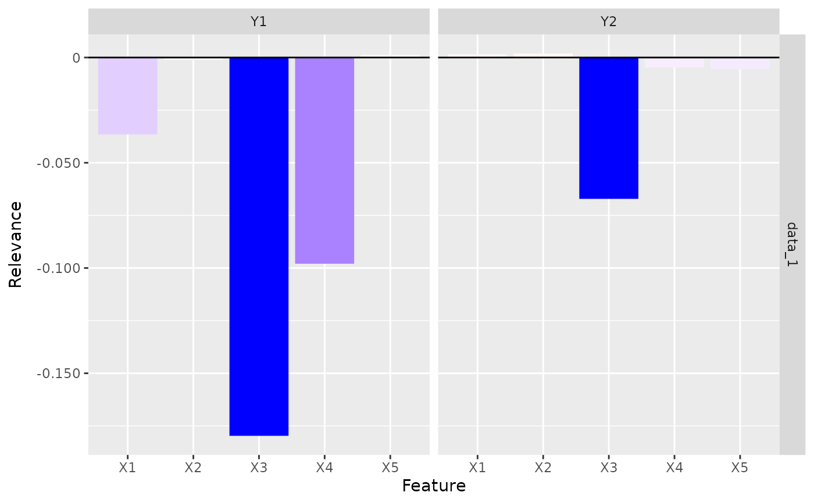
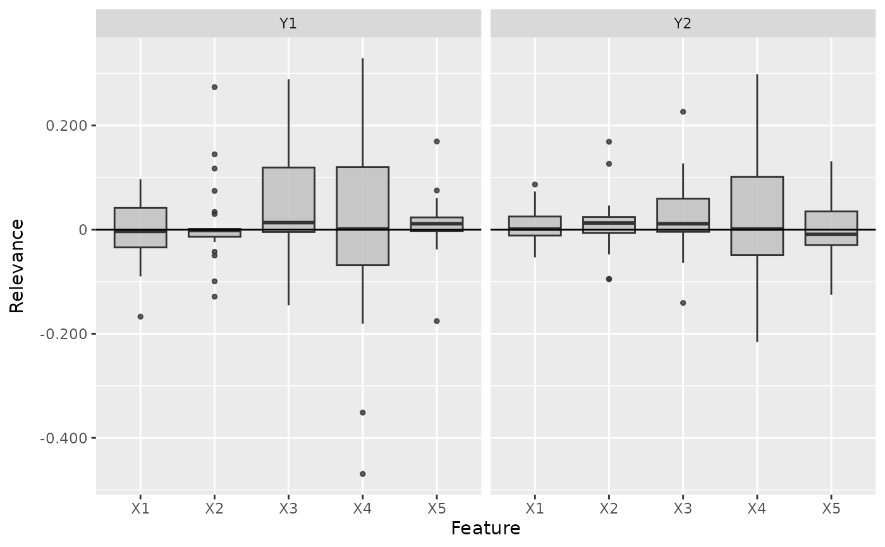
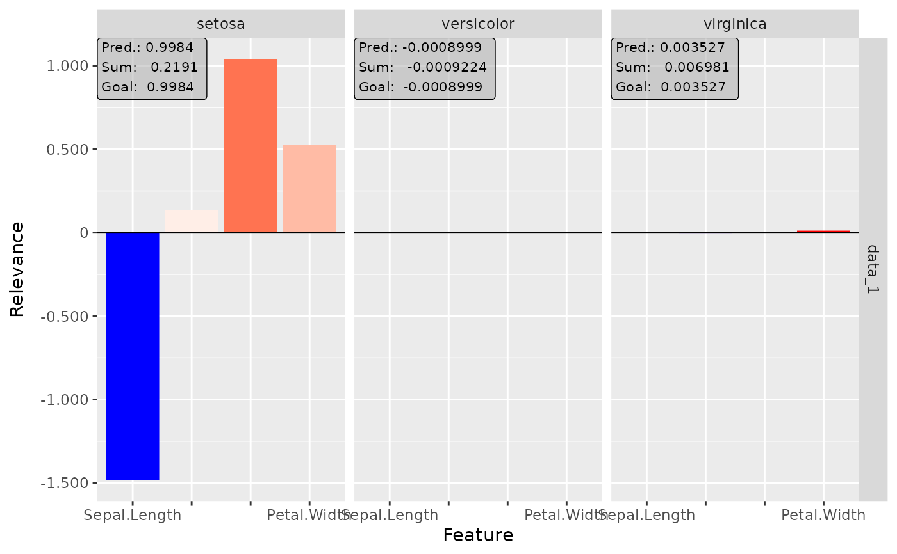
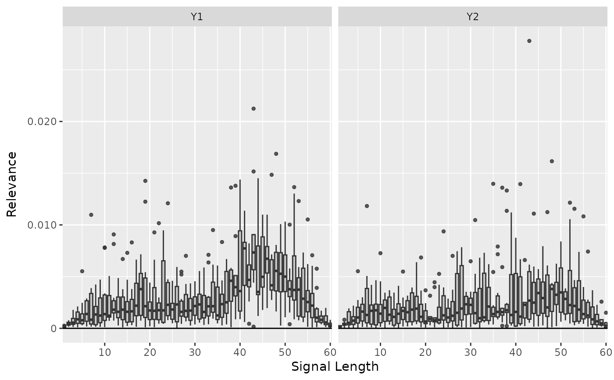

This is an implementation of the Layer-wise Relevance Propagation (LRP) algorithm introduced by Bach et al. (2015). It's a local method for interpreting a single element of the dataset and calculates the relevance scores for each input feature to the model output. The basic idea of this method is to decompose the prediction score of the model with respect to the input features, i.e. $$f(x) = \sum_i R(x_i).$$ Because of the bias vector that absorbs some relevance, this decomposition is generally an approximation. There exist several propagation rules to determine the relevance scores. In this package are implemented: simple rule ("simple"), epsilon rule ("epsilon") and alpha-beta rule ("alpha_beta").
S. Bach et al. (2015) On pixel-wise explanations for non-linear classifier decisions by layer-wise relevance propagation. PLoS ONE 10, p. 1-46
innsight::InterpretingMethod -> LRP
rule_nameThe name of the rule with which the relevance scores
are calculated. Implemented are "simple", "epsilon",
"alpha_beta" (default: "simple").
rule_paramThe parameter of the selected rule.
Inherited methods
new()Create a new instance of the LRP-Method.
LRP$new( converter, data, channels_first = TRUE, output_idx = NULL, ignore_last_act = TRUE, rule_name = "simple", rule_param = NULL, dtype = "float" )
converterAn instance of the R6 class Converter.
dataThe data for which the relevance scores are to be calculated. It has to be an array or array-like format of size (batch_size, dim_in).
channels_firstThe format of the given date, i.e. channels on
last dimension (FALSE) or after the batch dimension (TRUE). If the
data has no channels, use the default value TRUE.
output_idxThis vector determines for which outputs the method
will be applied. By default (NULL), all outputs (but limited to the
first 10) are considered.
ignore_last_actSet this boolean value to include the last
activation, or not (default: TRUE). In some cases, the last activation
leads to a saturation problem.
rule_nameThe name of the rule, with which the relevance scores
are calculated. Implemented are "simple", "epsilon",
"alpha_beta" (default: "simple").
rule_paramThe parameter of the selected rule. Note: Only the
rules "epsilon" and "alpha_beta" take use of the
parameter. Use the default value NULL for the default parameters
("epsilon" : \(0.01\), "alpha_beta" : \(0.5\)).
dtypeThe data type for the calculations. Use
either 'float' for torch::torch_float or 'double' for
torch::torch_double.
A new instance of the R6 class 'LRP'.
plot()This method visualizes the result of the selected method in a
ggplot2::ggplot. You can use the argument data_idx to select
the data points in the given data for the plot. In addition, the
individual output nodes for the plot can be selected with the argument
output_idx. The different results for the selected data points and
outputs are visualized using the method ggplot2::facet_grid.
You can also use the as_plotly argument to generate an interactive
plot based on the plot function plotly::plot_ly.
LRP$plot( data_idx = 1, output_idx = NULL, aggr_channels = "sum", as_plotly = FALSE )
data_idxAn integer vector containing the numbers of the data
points whose result is to be plotted, e.g. c(1,3) for the first
and third data point in the given data. Default: c(1).
output_idxAn integer vector containing the numbers of the
output indices whose result is to be plotted, e.g. c(1,4) for the
first and fourth model output. But this vector must be included in the
vector output_idx from the initialization, otherwise, no results were
calculated for this output node and can not be plotted. By default
(NULL), the smallest index of all calculated output nodes is used.
aggr_channelsPass one of 'norm', 'sum', 'mean' or a
custom function to aggregate the channels, e.g. the maximum
(base::max) or minimum (base::min) over the channels or only
individual channels with function(x) x[1]. By default ('sum'),
the sum of all channels is used.
Note: This argument is used only for 2D and 3D inputs.
as_plotlyThis boolean value (default: FALSE) can be used to
create an interactive plot based on the library plotly. This function
takes use of plotly::ggplotly, hence make sure that the suggested
package plotly is installed in your R session.
Advanced: You can first
output the results as a ggplot (as_plotly = FALSE) and then make
custom changes to the plot, e.g. other theme or other fill color. Then
you can manually call the function ggplotly to get an interactive
plotly plot.
Returns either a ggplot2::ggplot (as_plotly = FALSE) or a
plotly::plot_ly (as_plotly = TRUE) with the plotted results.
boxplot()This function visualizes the results of this method in a boxplot, where
the type of visualization depends on the input dimension of the data.
By default a ggplot2::ggplot is returned, but with the argument
as_plotly an interactive plotly::plot_ly plot can be created,
which however requires a successful installation of the package
plotly.
LRP$boxplot( output_idx = NULL, data_idx = "all", ref_data_idx = NULL, aggr_channels = "norm", preprocess_FUN = abs, as_plotly = FALSE, individual_data_idx = NULL, individual_max = 20 )
output_idxAn integer vector containing the numbers of the
output indices whose result is to be plotted, e.g. c(1,4) for the
first and fourth model output. But this vector must be included in the
vector output_idx from the initialization, otherwise, no results were
calculated for this output node and can not be plotted. By default
(NULL), the smallest index of all calculated output nodes is used.
data_idxBy default ("all"), all available data is used to
calculate the boxplot information. However, this parameter can be used
to select a subset of them by passing the indices. E.g. with
data_idx = c(1:10, 25, 26) only the first 10 data points and
the 25th and 26th are used to calculate the boxplots.
ref_data_idxThis integer number determines the index for the
reference data point. In addition to the boxplots, it is displayed in
red color and is used to compare an individual result with the summary
statistics provided by the boxplot. With the default value (NULL)
no individual data point is plotted. This index can be chosen with
respect to all available data, even if only a subset is selected with
argument data_idx.
Note: Because of the complexity of 3D inputs, this argument is used
only for 1D and 2D inputs and disregarded for 3D inputs.
aggr_channelsPass one of 'norm', 'sum', 'mean' or a
custom function to aggregate the channels, e.g. the maximum
(base::max) or minimum (base::min) over the channels or only
individual channels with function(x) x[1]. By default ('norm'),
the Euclidean norm of all channels is used.
Note: This argument is used only for 2D and 3D inputs.
preprocess_FUNThis function is applied to the method's result
before calculating the boxplots. Since positive and negative values
often cancel each other out, the absolute value (abs) is used by
default. But you can also use the raw data (identity) to see the
results' orientation, the squared data (function(x) x^2) to weight
the outliers higher or any other function.
as_plotlyThis boolean value (default: FALSE) can be used to
create an interactive plot based on the library plotly instead of
ggplot2. Make sure that the suggested package plotly is installed
in your R session.
individual_data_idxOnly relevant for a plotly plot with input
dimension 1 or 2! This integer vector of data indices determines
the available data points in a dropdown menu, which are drawn in
individually analogous to ref_data_idx only for more data points.
With the default value NULL the first individual_max data points
are used.
Note: If ref_data_idx is specified, this data point will be
added to those from individual_data_idx in the dropdown menu.
individual_maxOnly relevant for a plotly plot with input
dimension 1 or 2! This integer determines the maximum number of
individual data points in the dropdown menu without counting
ref_data_idx. This means that if individual_data_idx has more
than individual_max indices, only the first individual_max will
be used. A too high number can significantly increase the runtime.
Returns either a ggplot2::ggplot (as_plotly = FALSE) or a
plotly::plot_ly (as_plotly = TRUE) with the boxplots.
clone()The objects of this class are cloneable with this method.
LRP$clone(deep = FALSE)
deepWhether to make a deep clone.
#----------------------- Example 1: Torch ---------------------------------- library(torch) # Create nn_sequential model and data model <- nn_sequential( nn_linear(5, 12), nn_relu(), nn_linear(12, 2), nn_softmax(dim = 2) ) data <- torch_randn(25, 5) # Create Converter converter <- Converter$new(model, input_dim = c(5)) # Apply method LRP with simple rule (default) lrp <- LRP$new(converter, data) #> Backward pass 'LRP': #> | | | 0% | |=================================== | 50% | |======================================================================| 100% # Print the result as an array for data point one and two lrp$get_result()[1:2,,] #> , , Y1 #> #> X1 X2 X3 X4 X5 #> 1 0.009376573 0.0007551969 -0.01986527 0.1105140 -0.01554380 #> 2 -0.034303110 0.0632186756 -0.01030651 -0.1749057 0.07149401 #> #> , , Y2 #> #> X1 X2 X3 X4 X5 #> 1 -0.03600737 -0.004128753 -0.015916487 0.1217999 -0.03905627 #> 2 0.05323519 -0.048201058 0.002810451 0.2067945 -0.09148183 #> # Plot the result for both classes plot(lrp, output_idx = 1:2)  # Plot the boxplot of all datapoints without preprocess function boxplot(lrp, output_idx = 1:2, preprocess_FUN = identity)  # ------------------------- Example 2: Neuralnet --------------------------- library(neuralnet) data(iris) nn <- neuralnet(Species ~ ., iris, linear.output = FALSE, hidden = c(10, 8), act.fct = "tanh", rep = 1, threshold = 0.5 ) # create an converter for this model converter <- Converter$new(nn) # create new instance of 'LRP' lrp <- LRP$new(converter, iris[, -5], rule_name = "simple") #> Backward pass 'LRP': #> | | | 0% | |======================= | 33% | |=============================================== | 67% | |======================================================================| 100% # get the result as an array for data point one and two lrp$get_result()[1:2,,] #> , , setosa #> #> Sepal.Length Sepal.Width Petal.Length Petal.Width #> 1 3.928332 1.053082 -0.6294739 0.6488832 #> 2 3.001994 1.731096 -0.8032066 0.6173689 #> #> , , versicolor #> #> Sepal.Length Sepal.Width Petal.Length Petal.Width #> 1 5.665174 -6.472754 2.769754 1.075689 #> 2 3.043177 -4.309211 2.860033 1.060005 #> #> , , virginica #> #> Sepal.Length Sepal.Width Petal.Length Petal.Width #> 1 2.111376 -3.146020 1.266815 0.8472772 #> 2 2.385662 -3.241929 1.276490 0.9121323 #> # get the result as a torch tensor for data point one and two lrp$get_result(type = "torch.tensor")[1:2] #> torch_tensor #> (1,.,.) = #> 3.9283 5.6652 2.1114 #> 1.0531 -6.4728 -3.1460 #> -0.6295 2.7698 1.2668 #> 0.6489 1.0757 0.8473 #> #> (2,.,.) = #> 3.0020 3.0432 2.3857 #> 1.7311 -4.3092 -3.2419 #> -0.8032 2.8600 1.2765 #> 0.6174 1.0600 0.9121 #> [ CPUFloatType{2,4,3} ] # use the alpha-beta rule with alpha = 2 lrp <- LRP$new(converter, iris[, -5], rule_name = "alpha_beta", rule_param = 2 ) #> Backward pass 'LRP': #> | | | 0% | |======================= | 33% | |=============================================== | 67% | |======================================================================| 100% # include the last activation into the calculation lrp <- LRP$new(converter, iris[, -5], rule_name = "alpha_beta", rule_param = 2, ignore_last_act = FALSE ) #> Backward pass 'LRP': #> | | | 0% | |======================= | 33% | |=============================================== | 67% | |======================================================================| 100% # Plot the result for all classes plot(lrp, output_idx = 1:3)  # Plot the Boxplot for the first class boxplot(lrp)  # You can also create an interactive plot with plotly. # This is a suggested package, so make sure that it is installed library(plotly) # Result as boxplots boxplot(lrp, as_plotly = TRUE) # Result of the second data point plot(lrp, data_idx = 2, as_plotly = TRUE) # ------------------------- Example 3: Keras ------------------------------- library(keras) if (is_keras_available()) { data <- array(rnorm(10 * 60 * 3), dim = c(10, 60, 3)) model <- keras_model_sequential() model %>% layer_conv_1d( input_shape = c(60, 3), kernel_size = 8, filters = 8, activation = "softplus", padding = "valid" ) %>% layer_conv_1d( kernel_size = 8, filters = 4, activation = "tanh", padding = "same" ) %>% layer_conv_1d( kernel_size = 4, filters = 2, activation = "relu", padding = "valid" ) %>% layer_flatten() %>% layer_dense(units = 64, activation = "relu") %>% layer_dense(units = 16, activation = "relu") %>% layer_dense(units = 3, activation = "softmax") # Convert the model converter <- Converter$new(model) # Apply the LRP method with the epsilon rule and eps = 0.1 lrp_eps <- LRP$new(converter, data, channels_first = FALSE, rule_name = "epsilon", rule_param = 0.1 ) # Plot the result for the first datapoint and all classes plot(lrp_eps, output_idx = 1:3) # Plot the result as boxplots for first two classes boxplot(lrp_eps, output_idx = 1:2) # You can also create an interactive plot with plotly. # This is a suggested package, so make sure that it is installed library(plotly) # Result as boxplots boxplot(lrp_eps, as_plotly = TRUE) # Result of the second data point plot(lrp_eps, data_idx = 2, as_plotly = TRUE) } #> Backward pass 'LRP': #> | | | 0% | |========== | 14% | |==================== | 29% | |============================== | 43% | |======================================== | 57% | |================================================== | 71% | |============================================================ | 86% | |======================================================================| 100% # ------------------------- Advanced: Plotly ------------------------------- # If you want to create an interactive plot of your results with custom # changes, you can take use of the method plotly::ggplotly library(ggplot2) library(plotly) library(neuralnet) data(iris) nn <- neuralnet(Species ~ ., iris, linear.output = FALSE, hidden = c(10, 8), act.fct = "tanh", rep = 1, threshold = 0.5 ) # create an converter for this model converter <- Converter$new(nn) # create new instance of 'LRP' lrp <- LRP$new(converter, iris[, -5]) #> Backward pass 'LRP': #> | | | 0% | |======================= | 33% | |=============================================== | 67% | |======================================================================| 100% library(plotly) # Get the ggplot and add your changes p <- plot(lrp, output_idx = 1, data_idx = 1:2) + theme_bw() + scale_fill_gradient2(low = "green", mid = "black", high = "blue") #> Scale for 'fill' is already present. Adding another scale for 'fill', which #> will replace the existing scale. # Now apply the method plotly::ggplotly with argument tooltip = "text" plotly::ggplotly(p, tooltip = "text")